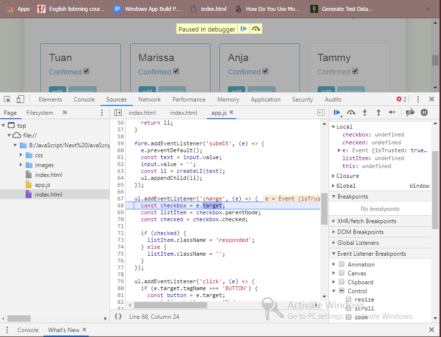
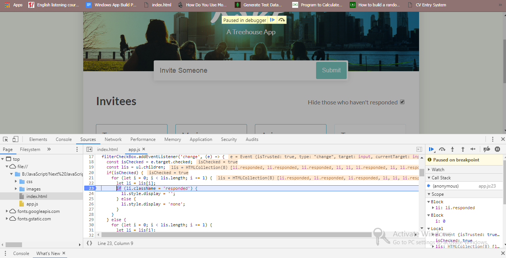
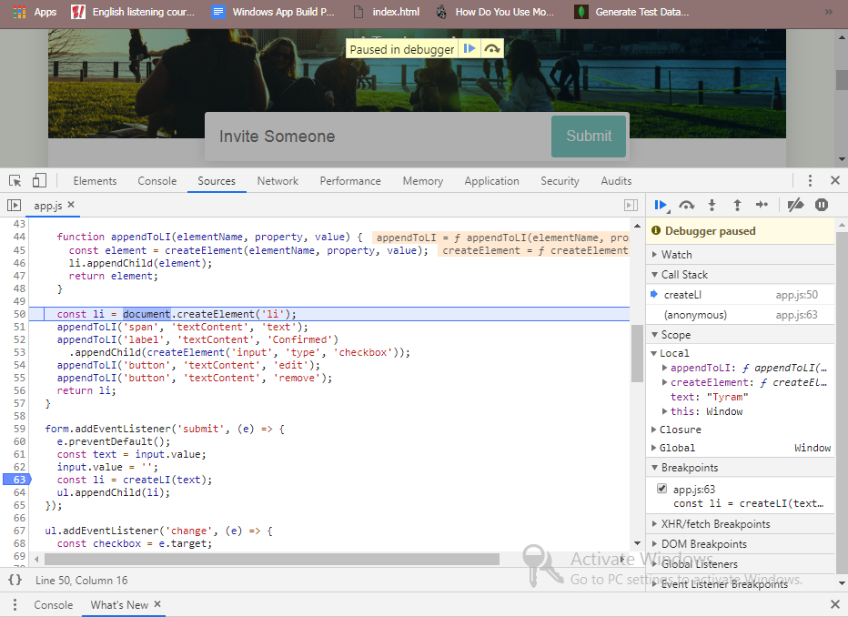
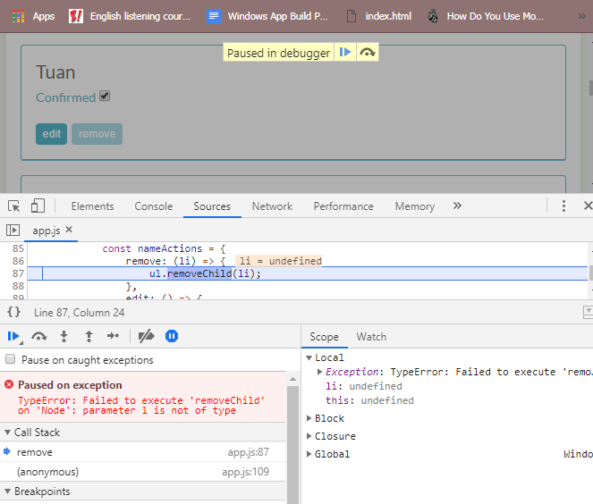

What You'll Learn
What is Debugging?
Programmers တွေအများစုရဲ့အမြင့်ဆုံးရည်ရွယ်ချက်ကတော့ code တွေကို error ကင်းအောင်ပြုလုပ်နိုင်ဖို့ပဲဖြစ်ပါတယ်။ကျွန်တော်တို့ဟာလူသားတွေဖြစ်တဲ့အတွက်ကြောင့်လွယ်ကူစွာမေ့တက်ပါတယ်။ဥပမာ parenthesis, key word misspell တွေနောက်ပြီးရိုးရှင်းတဲ့ logical error တွေစတာမျိုးတွေကိုမေ့နေတက်ပါတယ်။Computer တွေကအမှန်တကယ်မြန်အောင် Run နိုင်ပြီးတော့ computer တွေကကျွန်တော်တို့ရဲ့ program တွေကို snap ထဲမှာဖြစ်မြောက်အောင်လုပ်ဆောက်နိုင်ပါလိမ့်မယ်။ Error တွေထွက်ပေါ်လာတဲ့အချိန်မှာ အဲ့ဒီ error ဖြစ်နေတဲ့အမှားကိုခွဲခြားသတ်မှတ်ဖို့ခက်ခဲ့ပါလိမ့်မယ်။အဲ့တာကို computer တွေကလမ်းပြပေးနိုင်ပါတယ်။ကျွန်တော်တို့လေ့လာသွားမှာကတော့ browser ထဲမှာ JavaScript ကို debugging ပြုလုပ်ဖို့အတွက်techniques အချို့ကိုအသုံးပြုပုံတွေပဲဖြစ်ပါတယ်။Debugging ဆိုတာကတော့ software ထဲမှာသတ်ရောက်တဲ့ resolving နဲ့ finding ဆိုတဲ့ process တွေပဲဖြစ်ပါတယ်။Developers တွေကသူတို့ရဲ့ program တွေဘယ်နေရာမှာမှားပြီးရပ်တန့်သွားသလဲဆိုတာကိုသိဖို့အတွက် console.log ဆိုတဲ့ variables တွေကိုရေးပေးခဲ့ပါတယ်။ console တွေရေးပေးခဲ့ခြင်းကprogram ကဘယ်နေရာမှာမှာနေတယ်ဆိုတာကိုတိကြစွာဖော်ပြပေးနိုင်ပါတယ်။Debugging တွေလုပ်ပြီးတဲ့အခါမှာတော့ log statement တွေအကုန်လုံးကိုဖယ်ပြစ်နိုင်ပါတယ်။အဲ့ဒီလိုဖယ်ပြစ်ခြင်းကတစ်ခါတစ်လေမှာကျွန်တေ်ာတို့သို့မဟုတ်တစ်ယောက်ယောက်က CODE တွေထဲကိုပြန်သွားကြည့်တဲ့အခါမှာရှုပ်ထွေးမှုတွေကိုဖြစ်စေနိုင်ပါတယ်။တစ်ခါတစ်ရံမှာ console တွေကကျန်ရှိနေနိုင်ပါတယ်။ဆိုလိုတာကတော့ကျွန်တော်တို့ Program တွေမှာ class တွေကိုပြောင်းလိုက်တဲ့အခါမှာ log တွေမှာမပြောင်းမိပဲကျန်နေခဲ့တာပဲဖြစ်ပါတယ်။အဲတာတွေက အချိန်တွေကို waste ဖြစ်စေပြီးကျွန်တော်တို့ရဲ့ code တွေထဲမှာနဲ့ console ထဲမှာနဲ့တခြားဆီအလုပ်လုပ်နေပါလိမ့်မယ်။ ဘာ့ကြောင့်လဲဆိုတော့ Program တွေကမြန်မြန်ဆန်ဆန် run နိုင်ပြီးရပ်တန့်ဖို့လိုအပ်တဲ့နေရာမှာသိသိသာသာသတ်ရောက်နိုင်ပါတယ်။ကျွန်တော်တို့ကအဲ့တာတွေကိုခြုံပြီးကြည့်နိုင်ပါတယ်။အဲ့တာကတော့ debugging ရဲ့ပထမအဆင့်ပဲဖြစ်ပါတယ်။debugging တွေကိုရပ်တန့်လိုက်တဲ့အခါမှာ program ကတိကျတဲ့ Line တွေမှာရပ်တန့်ပေးပါလိမ့်မယ်။နောက်ပြီးကျွန်တော်တို့က program တွေကဘယ်လိုသတ်ရောက်သလဲဆိုတာကိုသိဖို့အတွက် value တွေကိုပြောင်းထည့်ပြီးစမ်းသတ်ကြည့်နိုင်ပါတယ်။နောက်ဆုံးတစ်ဆင့်ကတော့ကျွန်တော်တို့က progarm တွေကို Line by line ထည့်ပြီးရေးတာပဲဖြစ်ပါတယ်။အဲ့လိုရေးခြင်းကကျွန်တော်တို့ program တွေကိုဘယ်လိုအလုပ်လုပ်သလဲဆိုတာကိုမြင်နိုင်တာပဲဖြစ်ပါတယ်။Google chrome မှာတော့ dev tool လို့ခေါ်တဲ့ tool ကနေကျွန်တော်တို့မြင်နိုင်မှာပဲဖြစ်ပါတယ်။
Breaking on Events and Basic Stepping
ကျွန်တော်တို့ event တွေပေါ်မှာဘယ်လို breaking ပြုလုပ်တယ်ဆိုတာကိုကျွန်တော်တို့အခြေခံအဆင့်တွေနဲ့ပြောပြသွားမှာဖြစ်ပါတယ်။ဥပမာအတွက်ကျွန်တော်တို့မှာ web page တစ်ခုရှိပြီးသားဖြစ်ရပါမယ်။အဲ့ဒီ page ကိုသွားပြီးကျွန်တော်တို့က Tammy ဆိုတဲ့နာမ်မည်နဲ့ content ရဲ့အောက်မှာရှိတဲ့
checkbox ကို check လုပ်လိုက်တဲ့အခါမှာ content တစ်ခုလုံးကို highlight ပြုလုပ်ပေးရမှာဖြစ်ပါတယ်။ကျွန်တော်တို့စပြီး checked လုပ်လိုက်တဲ့အချိန်မှာဘာမှာဖြစ်ပေါ်မလာပါဘူး။အဲ့တာကကျွန်တော်တို့စပြီးရှာဖွေမဲ့ပထမဆုံး bug ပဲဖြစ်ပါတယ်။အဲ့တာကြောင့်ကျွန်တော်တို့က
browser ရဲ့ dev tool ကိုဖွင်ပြီး bug ကိုရှာဖွေရမှာပဲဖြစ်ပါတယ်။ကျွန်တော်တို့ dev tool ကိုဖွင့်ပြီး element tag တွေ console tag တွေနဲ့အလုပ်လုပ်ခဲ့ဘူးပါတယ်။ဒီတစ်ခါမှာတော့ကျွန်တော်တို့အဓိကအသုံးပြုမယ့် tag က source tag ပဲဖြစ်ပါတယ်။အဲ့ဒီ
tag ထဲမှာကျွန်တော်တို့ panes ၃ ခုကိုတွေ့ရမှာဖြစ်ပြီး button တွေနဲ့မမြင်အောင်ဖြောက်ထားလို့လည်းရပါတယ်။ ပထမ tag ထဲမှာတော့ကျွန်တော်တို့ project ရဲ့ flie tree ကိုတွေ့ရမှာဖြစ်ပါတယ်။ အဲ့ထဲမှာရှိတဲ့ Js file တွေ html file တွေကိုတော့ middle
pane ထဲမှာအကြယ်ပြန့်ဖော်ပြမှာဖြစ်ပါတယ်။တစ်ခါတစ်လေ dev tool မှာကျွန်တော်တို့ refresh ပြုလုပ်ပေးမှပေါ်မှာပဲဖြစ်ပါတယ်။right pane မှာတော့ tools တွေကိုတွေ့ရမှာဖြစ်ပြီး ကျွန်တော်တို့ code တွေကို debug လုပ်တဲ့အခါမှာအသုံးပြုဖို့ပဲဖြစ်ပါတယ်။ကျွန်တော်တို့
problem ကိုဘယ်လိုစပြီး tackle လုပ်မလဲဆိုတာကိုစပြီးစဉ်းစားရမှာပဲဖြစ်ပါတယ်။bug ကကျွန်တော်တို့ check သို့ uncheck ပြုလုပ်တဲ့အခါမှာဖြစ်ပွားတာပဲဖြစ်ပါတယ်။ပြောင်းလဲတဲ့ event ကိုကျွန်တော်တို့ကတွေ့ရဖို့အတွက် execution ကိုခန pause လုပ်ထားဖို့လိုအပ်ပါတယ်။pause
လုပ်ဖို့အတွက်ကျွန်တော်တို့က breakpoint လိုခေါ်တာတွေကိုအသုံးပြုပါတယ်။ကျွန်တော်တို့က breakpoint ကိုထားဖို့အတွက် Event Listener breakpoints ရဲ့ list တွေကို expend ပြုလုပ်ပြီးသွားရပါမယ်။အဲ့ဒီထဲမှာ ကျွန်တော်တို့ break လုပ်နိုင်တဲ့ events
types တွေအများကြီးပါဝင်ပါတယ်။ကျွန်တော်တို့က form ထဲမှာပြောင်းလဲတာကိုအသုံးပြုမှာမို့ form control ကနေ change ဆိုတာကိုရွေးခဲ့ရမှာပဲဖြစ်ပါတယ်။အဲ့ဒီလိုပြုလုပ်ပြီးကျွန်တော်တို့ page ပေါ်မှာရှိတဲ့ checkbox ကို check လုပ်လိုက်တဲ့အခါမှာ screen
dims ဖြစ်သွားပြီး source tag ထဲမှာ code line တွေကို select ပြုလုပ်နေပါလိမ့်မယ်။အဲ့တာကကျွန်တော်တို့ရဲ့ listener function code ကဘယ်နေရာကစတယ်ဆိုတာကိုဖော်ပြတာပဲဖြစ်ပါတယ်။right panes မှာတော့ current function scope မှာတည်ရှိတဲ့ variables
list တွေကိုဖော်ပြတာပဲဖြစ်ပါတယ်။ကျွန်တော်တို့ ဥပမာထဲမှာတော့ Variable list 3ခုကassigned ပြုလုပ်ပြီးသားဖြစ်ပါတယ်။အဲ့တာကြောင့်သူတို့က undefined ဖြစ်နေတာပဲဖြစ်ပါတယ်။တကယ်လို့ကျွန်တေ်တို့က function ကိုဖြတ်ပြီးတော့သွားမယ်ဆိုရင်အဲ့တာတွေက assign
values တွေဖြစ်လာနိုင်ပါတယ်။event object ကတော့ကျွန်တော်တို့ event တွေကို triggered ပြုလုပ်တဲ့အချိန်မှာ pass ပြုလုပ်နိုင်တာပဲဖြစ်ပါတယ်။နောက်ထဲအဲ့ထဲမှာပါတဲ့ this ဆိုတဲ့ keyword ကိုကျွန်တော်တို့သတိထားကြည့်မယ်ဆိုရင် အဲ့တာက javaScript functions
တွေအားလုံးမှာပါဝင်ပြီး big topic တစ်ခုလည်းဖြစ်ပါတယ်။ကျွန်တော်တို့ရဲ့အခုသင်ခန်းစာမှာတော့အဲ့တာကို ignore ပြုလုပ်ထားမှာပဲဖြစ်ပါတယ်။နောက်ထပ်ကျွန်တော်တို့က step over ဆိုတဲ့ button ကိုနှိပ်ပြီးတော့တစ်ဆင့်ခြင်းသွားနိုင်ပါတယ်။bug ကိုပြန်ပြီးကြည့်မယ်ဆိုရင်ကျွန်တော်တို့ရဲ့
checkbox variable က undefined ဖြစ်နေပါတယ်။အဲ့တာကဘာ့ကြောင့်လဲဆိုရင် သူတို့ execute မလုပ်ခင်မှာ lines တွေက hightlight ပြုလုပ်ထားတဲ့အချိန်မို့ဖြစ်ပါတယ်။နောက်ထပ်တစ်ကြောင်းကိုဆက်ဆင်းမယ်ဆိုရင်တော့ value တွေပေါ်လာမှာပဲဖြစ်ပါတယ်။ကျွန်တော်တို့
current line ကိုဖြတ်သွားပြီးတဲ့အခါမှာ value က label ဖြစ်နေတာကိုတွေ့ရပါလိမ့်မယ်။ထောက်ပံ့ပေးတဲ့ variable name က list item မဟုတ်ပါဘူး။ကျွန်တော်တို့ code ထဲက line 73 မှာတော့ lable class ကို responded ဆိုပြီးပေးထားခဲ့တာဖြစ်ပါတယ်။ကျွန်တော်တို့
DOM ထဲကိုသွားကြည့်မယ်ဆိုရင်တော့ list item က label ရဲ့ parent item ဖြစ်နေတာကိုတွေ့ရမှာပဲဖြစ်ပါတယ်။အခြား list item တွေအကုန်လုံးက style မှန်ကန်ပြီး responded class တွေရှိကြတာဖြစ်ပါတယ်။အဲ့တာကြောင့်အခုကျွန်တော်တို့ဖြစ်ပေါ်နေတဲ့ bug က responded
class ဆိုတဲ့ class က list item ပေါ်မှာမရှိပဲ label ပေါ်မှာရှိနေလို့ပဲဖြစ်ပါတယ်။နောက်ပြီးကျွန်တော်တို့ list item ကို declared လုပ်တဲ့နေရာကိုပြန်သွားကြည့်မယ်ဆိုရင် ကျွန်တော်တို့ target လုပ်ချင်တဲ့ label element ရဲ့ parent ကိုတွေ့ရမှာပဲဖြစ်ပါတယ်။အဲ့ဒီ
line မှာတော့ကျွန်တော်တို့ parent node ကိုနှစ်ခါသတ်မှတ်ခဲ့ဖို့လိုအပ်ပါတယ်။ဘာ့ကြောင့်လဲဆိုတော့ listitem က html structure ထဲမှာဆိုရင် checkbox ရဲ့ grandparent ဖြစ်နေလို့ပဲဖြစ်ပါတယ်။ကျွန်တော်တို့က DOM tree ထဲမှာနှစ်ခါထပ်ပြီးတော့ traverse
ပြုလုပ်ဖို့လိုအပ်တာပဲဖြစ်ပါတယ်။အစောကကျွန်တော်တို့က browser ကို pause ပြလုပ်ခဲ့တဲ့အခြေအနေမှာပဲ listitem variable တွေကိုမှန်ကန်တဲ့ element ဖြစ်ဖို့အတွက်ပြောင်းလဲနိုင်ပါတယ်။အဲ့တာကြောင့်ကျွန်တော်တို့က line 69 မှာရှိတဲ့ code ကိုကူးပြီး
console ထဲမှာထည့်ပေးမှာ paste လုပ်ပေးရပါမယ်။အဲ့ဒီနောက်မှာတော့ အခြား parentNode property တစ်ခုကိုထည့်ပြီး run ပေးနိုင်ပါတယ်။နောက်ပြီးကျွန်တော်တို့က switch tag ထဲကိုပြန်သွားပြီး refresh ဖြစ်ဖို့အတွက် step နောက်တစ်ခုကိုသွားလိုက်မယ်ဆိုရင်
list item က list element ကို hold ပြုလုပ်တာကိုတွေ့ရမှာပဲဖြစ်ပါတယ်။ ကျွန်တော်တို့က bug ကိုအမှန်တကယ်ဖြေရှှုင်းဖို့အတွက် text editor ထဲမှာသွားပြီးပြောင်းလဲပေးရမှာပဲဖြစ်ပါတယ်။ကျွန်တော်တို့ပြောင်းလဲထားတာကိုအလုပ်လုပ်မလုပ် test ပြုလုပ်ဖို့အတွက်ကျွန်တော်တို့
chrome မှာတော့ breakpoint ကို deactivating ပြုလုပ်နိုင်ပါတယ်။Deactivated button ကိုနှိပ်ပြီးပြုလုပ်နိုင်ပြီး breakpoints တွေအကုန်လုံးကို deactived ပြုလုပ်ပေးမှာဖြစ်ပါတယ်။ကျွန်တော်တို့ page မှာ comfirmed ဆိုတဲ့ checkbox တွေမှန်မှန်ကန်ကန်အလုပ်လုပ်တာကိုကျွန်တော်တို့တွေမြင်တွေ့ရမှာပဲဖြစ်ပါတယ်။ကျွန်တော်တို့အခုပြောပြခဲ့ပြုလုပ်ခဲတာတွေကတော့
debugging ရဲ့အခြေခံတွေပဲဖြစ်ပါတယ်။

See Correct page
Basic and Conditional Line Breakpoints
နောက်ထပ် bug တစ်ခုကတော့ conditional line break points တွေပဲဖြစ်ပါတယ်။ကျွန်တော်တို့ ဥပမာ page ထဲမှာ hide checkbox ကို check ပြုလုပ်လိုက်တဲ့အခါမှာ guest တွေအားလုံးကပြောက်သွားရမှာဖြစ်ပါတယ်။ဒါပေမယ့်ကျွန်တော်တို့ page မှာတော့ပြောက်မသွားပါဘူး။အဲ့တာကြောင့်ကျွန်တော်တို့
page ပေါ်မှာ Inspect ထောက်ပြီးဘယ်ဟာတွေကအလုပ်မလုပ်လဲဆိုတာကိုရှာရမှာပဲဖြစ်ပါတယ်။page မှာရှိတဲ့ guests တွေအကုန်လုံးက responded ပြန်မပေးတာပဲဖြစ်ပါတယ်။အဲ့တာတွေက inline display property မှာ none value ပေးပြီး page ကနေ hide ဖို့အတွက်အသုံးပြုထားတာလည်းဖြစ်နိုင်ပါတယ်။
ပြီးခဲ့တဲ့သင်ခန်းစာတုန်းကလိုပဲကျွန်တော်တို့ event ထဲမှာ change ကိုရွေးချယ်ခဲ့ပြီးတော့ hide checkbox ကို check လုပ်ပေးခဲ့ရမှာဖြစ်ပါတယ်။အဲ့ဒီအခါမှာ debugger က pause ဖြစ်သွားပြီး listener က line 17 ကနေစတင်မှာပဲဖြစ်ပါတယ်။ကျွန်တော်တို့က
breakpoint တွေကိုကျွန်တော်တို့သတ်မှတ်ချင်တဲ့ line number မှာသတ်မှတ်ပေးနိုင်ပါတယ်။ ဘယ်အချိန်မှာပဲဖြစ်ဖြစ် javaScript interpreter ကအဲ့နေရာကိုရောက်တဲ့အခါမှာရပ်တန့်သွားမှာပဲဖြစ်ပါတယ်။ အဲ့ဒီအတွက်ကျွန်တော်တို့ကတစ်ဆင့်ခြင်းသွားစရာမလိုတော့ပဲ
play button ကိုနှိပ်ပြီးသွားနိုင်ပါတယ်။ကျွန်တေ်ာတို့ဟာ loop ထဲကိုစဝင်နေပြီလို့ပြောနိုင်ပါတယ်။ဘာ့ကြောင့်လဲဆိုတော့ i မှာ 0 ဆိုတဲ့ value စဝင်လာလို့ပဲဖြစ်ပါတယ်။scope window ထဲမှာရှိတဲ့ li element ပေါ်မှာmouse တင်ထားတဲ့အခါမှာ page ပေါ်မှာရှိတဲ့
first name ပေါ်မှာ highlight ဖြစ်နေတာကိုကျွန်တော်တို့မြင်တွေ့ရမှာပဲဖြစ်ပါတယ်။ ဘာ့ကြောင့်လဲဆိုတော့ကျွန်တော်တို့ bug က unchecked လုပ်ထားတဲ့ guests ကိုသတ်မှတ်လို့ပဲဖြစ်ပါတယ်။အဲ့တာကြောင့်ကျွန်တော်တို့က guest ၄ခုလုံးကို အလုပ်လုပ်ကြည့်ဖို့လိုအပ်ပါတယ်။အဲ့ဒီအတွက်ကျွန်တော်တို့က
play button ကိုနှိပ်တဲ့အခါမှာ Loop ကနောက်ထပ်ပြန်ပြီးအလုပ်လုပ်နေပါလိမ့်မယ်။ပြီးတော့ breakpoint ရောက်တဲ့အခါမှာတော့ရပ်နေပါလိမ့်မယ်။အဲ့လိုပြုလုပ်ပြီးကျွန်တော်တို့က unchecked ပြုလုပ်ထားတဲ့ li ထိ play button ကိုနှိပ်ရမှာပဲဖြစ်ပါတယ်။ဥပမာကျွန်တော်တို့မှာ
guest 200 ရှိတယ်ဆိုရင် bug က 175 ခုမှာရှိတယ်ဆိုရင်ကျွန်တော်တို့က play button ကို175 ခါနှိပ်နေရမှာပဲဖြစ်ပါတယ်။ကံကောင်းစွာပဲကျွန်တော်တို့က breakpoint ကို condition နဲ့သတ်မှတ်ပြီးတော့ pause လုပ်နိုင်ပါတယ်။ကျွန်တော်တို့အောက်ကပုံထဲမှာ condition
သတ်မှတ်ပြီး breakpoint ထားပြထားတာပဲဖြစ်ပါတယ်။ပထမကျွန်တော်တို့က hide checkbox ကို check လုပ်ထားဖို့လိုအပ်ပါတယ်။အဲ့ဒီနောက် line 23 ပေါ်မှာ right-click ထောက်ပြီး add conditional breakpoint ဆိုတာကိုရွေးပြီး condition တွေထည့်နိုင်ပါတယ်။နောက်ပြီး
play button ကိုနှိပ်ပြီး run နိုင်ပါတယ်။အဲ့ဒီနည်းလမ်းကတော့ expression တွေကိုအသုံးပြုဖို့အတွက် direct အသုံးပြုနိုင်တဲ့နည်းလမ်းပဲဖြစ်ပါတယ်။ကျွန်တော်တို့ page မှာတော့သေချာတဲ့ class name တွေနဲ့ elements တွေက missing ဖြစ်နေတဲ့အချိန်ပဲဖြစ်ပါတယ်။ကျွန်တော်တို့ကနောက်ထပ်တစ်ဆင့်ကိုထပ်သွားကြည့်မယ်ဆိုရင်
current list items တွေရဲ့ class name တွေက responsed မပြန်ပါဘူး။scope ပေါ်မှာရှိတဲ့ scope ရဲ့ element style ကတော့ပြောင်းလဲသွားတာကိုတွေ့ရမှာဖြစ်ပါတယ်။bug ကတော့ assignment operator တစ်ခုဖြစ်တဲ့ single equal sign ပဲဖြစ်ပါတယ်။အဲ့တာက element
အဖြစ် class ကိုassign လုပ်တာပဲဖြစ်ပါတယ်။ဒါပေမယ့်၎င်းက equality operator ကိုသုံးပြီးတော့ condition ကို testing ပြုလုပ်ပါလိမ့်မယ်။

Debugging Functions
ကျွန်တော်တို့ဒီတစ်ခါလေ့လာသွားမယ့် program ထဲမှာတော့ bugs တွေအနည်းငယ်ပိုများလာပါတယ်။အဲ့တာတွေကိုကျွန်တော်တို့ဥပမာပေးထားတဲ့ RSVP app ထဲမှာ name အသစ်ကိုပေးတဲ့အချိန်မှာတွေ့ရမှာပဲဖြစ်ပါတယ်။ကျွန်တော်တို့ရေးလိုက်တဲ့ name တွေအတိုင်းထွက်မလာပဲ guest အသစ်တွေက text
ဆိုတဲ့စာသားတွေနဲ့ပဲပေါ်လာတာဖြစ်ပါတယ်။အဲ့တာရဲ့ bug ကိုရှာဖို့အတွက်ကျွန်တော်တို့ page မှာ inspect ထောက်ပြီးကြည့်ရပါမယ်။ပြီးခဲ့တဲ့သင်ခန်းစာတွေမှာတော့ event ကိုကျွန်တော်တို့က checkbox ကိုအသုံးပြုတာဖြစ်လို့ change ကိုသုံးခဲ့ပြီးတော့ အခုတစ်ခါမှာတော့ကျွန်တော်တို့
submit ဆိုတာကိုအသုံးပြုမှာပဲဖြစ်ပါတယ်။ပထမကျွန်တော်တို့က submit ဆိုတဲ့ button ကိုနှိပ်လိုက်တဲ့အခါမှာ html ထဲမှာရှိတဲ့ list item ကနေကိုယ်စားပြုပြီးတော့ invitees အသစ်တစ်ခုကိုတည်ဆောက်တာပဲဖြစ်ပါတယ်။bug ကိုရှာဖို့အတွက်ကျွန်တော်တို့က line
63 မှာ breakpoint ပေးပြီးအလုပ်လုပ်ရပါမယ်။ dev tool ထဲမှာ step over ကိုထပ်နှိပ်မယ်ဆိုရင်တော့ function ထဲကိုမသွားပဲနောက်တစ်ကြောင်းကိုဆင်းသွားမှာဖြစ်ပါတယ်။ကျွန်တော်တို့ရဲ့page ထဲမှာ submit လုပ်ဖို့အတွက် name တစ်ခုကိုရေးခဲ့ရပါမယ်။နောက်ပြီးကျွန်တော်တို့က
step ကိုနှိပ်ပြီး funtion ထဲကိုသွားနိုင်ပါတယ်။အခြား function ထဲမှာအခြား function ကိုခေါ်ြ့ပီးအသုံးပြုထားတာတွေကို call stack မှာဖော်ပြထားတာဖြစ်ပြီး scope window ကတော့ကျွန်တော်တို့ဘယ်နေရာမှာဘာတွေရှိတယ်ဆိုတာတွေကိုကူညီြ့ပီးဖော်ပြတာပဲဖြစ်ပါတယ်။ကျွန်တော်တို့
scope ထဲမှာကြည့်မယ်ဆိုရင် textContent ထဲမှာ text ဆိုတဲ့ value ရောက်နေတာပဲဖြစ်ပါတယ်။အဲ့တာက bug တစ်ခုဖြစ်ပြီးကျွန်တော်တို့ထည့်လိုက်တဲ့ name ရောက်နေရမှာပဲဖြစ်ပါတယ်။အဲ့ဒီ bug ကိုမရှင်းခင်ကျွန်တော်တို့က step out ကိုပြောပြပေးပါမယ်။step out
ဆိုတာကတော့ကျွန်တော်တို့မှန်အောင်ပြုပြင်ထားတဲ့ current function ထဲကနေနောက်ကိုပြန်ပြီးထွက်သွားမှာဖြစ်ပါတယ်။နောက်ကိုပြန်ကြည့်မယ်ဆိုရင်ကျွန်တော်တို့ create element တွေက returned ပြန်ပြီးတော့အဲ့ဒီ value တွေကိုelement ထဲမှာသိုလှောင်ပေးပါတယ်။bug
ကတော့ကျွန်တော်တို့ပေးခဲ့တဲ့ text ဆိုတာကို code mark ထည့်ထားခဲ့လို့ပဲစဖ်ပါတယ်။

Debugging Exception Errors
ကျွန်တော်တို့ပြုပြင်ခဲ့ကြတဲ့ bugs တွေဟာအမှန်တကယ်တော့ JavaScript errors တွေပဲဖြစ်ပါတယ်။မမျှော်လင့်တဲ့အပြုအမူတွေကိုရရှိပါတယ်ဒါပေမယ့် javaScript interpreter တွေကကျွန်တော်တို့ code ထဲမှာဘယ်ပြသနာမျိုးကိုမှမမြင်နိုင်ပါဘူး။မကြာခနလိုပါပဲ errors တွေက bugs တွေနဲ့အတူတူတည်ရှိနေပါလိမ့်မယ်။ကျွန်တော်တို့ရဲ့
ဥပမာ page မှာ remove button တစ်ခုကိုနှိပ်လိုက်တဲ့အခါမှာ remove လုပ်ပေးသွားရမှာဖြစ်ပါတယ်။ဒါပေမယ့်ဘာမှဖြစ်သွားတာမရှိပါဘူး။အဲ့တာကြောင့်ကျွန်တော်တို့ dev tools ကနေကြည့်တဲ့အခါမှာတော့ဘယ်ဘက်အပေါ်ထောင့်မှာအနီရောင်အမှားကြက်ခြေခတ်ကိုတွေ့ရမှာဖြစ်ပါတယ်။အဲ့တာကတော့ကျွန်တော်တို့ကို
errors ဘယ်နှစ်ခုရှိတယ်ဆိုတာကိုပြောတာပဲဖြစ်ပါတယ်။အဲ့တာကို click လုပ်လိုက်ရင်တော့ source window ထဲမှာ console ကထွက်ပေါ်လာမှာပဲဖြစ်ပါတယ်။ကျွန်တော်တို့ chrome ရဲ့ dev tools မှာပါတဲ့ trick တစ်ခုကတော့ dev tool ကိုကျွန်တော်တို့နေရာပြောင်းသုံးလို့ရတာပဲဖြစ်ပါတယ်။ကျွန်တော်တို့
error ထဲမှာတော့ removeChild ကမခေါ်နိုင်တာပဲဖြစ်ပါတယ်။Error ကပြနေတာကတော့ remove child ထဲကိုဖြတ်သွားတဲ့ parameter က node မဟုတ်ဘူးဆိုတာပဲဖြစ်ပါတယ်။error တစ်ခုတွေ့လိုက်တဲ့အခါမှာ interpreter တွေကအလုပ်လုပ်တာတွေရပ်တန့်သွားပါတယ်။အဲ့တာကြောင့်ကျွန်တော်တို့က
call stack သို့မဟုတ scope တွေကိုကြည့်ဖို့ရန်အတွက်အဲ့ဒီ tools တွေကိုအသုံးမပြုနိုင်ပါဘူး။အဲ့တာကြောင့်ကျွန်တော်တို့က program မှာ error မတွေ့ခင်မှာ breakpoints ကိုသတ်မှတ်ခဲ့ဖို့လိုအပ်ပါတယ်။နောက်ပြီးကျွန်တော်တို့ pause exceptions button
ကိုလည်း pause လုပ်ခဲ့ဖို့လိုအပ်ပါတယ်။အဲ့တာကကျွန်တော်တို့ error ကို throw မလုပ်ခင်မှာ expection တွေက pause ပြုလုပ်နေပါလိမ့်မယ်။ကျွန်တော်တို့ Page ကို refresh လုပ်ပြီး remove button ကိုနှိပ်လိုက်တဲ့အခါမှာတော့ Li က undefined ဖြစ်နေပြီး
Local scope ထဲမှာ removes ဖြစ်နေပါလိမ့်မယ်။နောက်ပြီးကျွန်တော်တို့ expection မှာ error object ကိုလည်းမြင်ရပါလိမ့်မယ်။ remove function ကအဲ့ဒီ nameActions object ထဲမှာပဲဖြစ်ပါတယ်။အဲ့တာက action variable ထဲမှာ remove ဆိုတဲ့ string ကို hold
လုပ်ထားပြီး accessed ပြုလုပ်တာပဲဖြစ်ပါတယ်။ဒါပေမယ့် အဲ့ဒီထဲမှာ argument တွေမရှိပါဘူူး။ု remove function ထဲမှာတော့ Li က undefined ဖြစ်နေပါတယ်။ဘာ့ကြောင့်လဲဆိုတော့ li က locally အရ block scope ထဲမှာရှိတဲ့အတွက် undefined ဖြစ်နေပါတယ်။အဲ့ဒီ
function ရဲ့အပြင်ဘက် scope ထဲရောက်သွားတဲ့အခါမှာ li က defined ဖြစ်နေပါတယ်။ဘာ့ကြောင့် li က locally တည်ရှိနေလဲဆိုရင် outer scope ကနေ variable ကိုအသုံးပြုဖို့ရန်အတွက် remove function ထဲမှာ blocking ဖြစ်နေတာပဲဖြစ်ပါတယ်။ အဲ့တာကြောင့်ကျွန်တော်တို့က
remove function ထဲက li ဆိုတဲ့ argument ကိုဖယ်ပြီးကျွန်တော်တို့ပြန် run ကြည့်ရင်အလုပ်လုပ်မှာပဲဖြစ်ပါတယ်။

See Correct Page
Breaking on DOM Changes and Watch Expressions
နောက်ဆုံး bug တစ်ခုကတော့ကျွန်တော်တို့ squash ပြလုပ်ဖို့လိုအပ်ပါတယ်။ကျွန်တော်တို့ဥပမာ page ထဲမှာ edit ဆိုတဲ့ button ကိုနှိပ်လိုက်ရင်နာမ်မည်ကိုပြောင်းဖို့အတွက် input box ကြလာပါတယ်။ဒါပေမယ့်ရှိပြီးသား name ကတော့ဖြည့်ပြီးသားဖြစ်မနေပါဘူး။အဲ့ဒီ bug ကိုတွေ့ရမှာဖြစ်ပြီးတော့
DOM ထဲမှာပြောင်းလဲပေးဖို့ချိတ်ဆက်ထားဖို့လိုအပ်ပါတယ်။list item ကတော့ input element ထဲမှာထည့်ထားတာပဲဖြစ်ပါတယ်။DOM တွေပြောင်းတဲ့အခါမှာ trigger ပြုလုပ်ဖို့အတွက် break points တွေကိုထားနိုင်ပါတယ်။နောက်ြင်္ပိးကျွန်တော်တို့ page ပေါ်မှာ inspect
ထောက်ပြီး element tag ကိုသွားရပါမယ်။နောက်ပြီးပထမဆုံး Li ကို breakpoint ထားဖို့အတွက်ကျွန်တော်တို့ li ဆိုတဲ့ tag ပေါ်မှာ right click နှိပ်ပြီး Break on ဆိုတာကိုသွားရပါမယ်။အဲ့ဒီမှာ attribute သုံးခုရှိပြီးတော့ node တွေကို break ပြုလုပ်ချင်တဲ့အခါမှာတော့
node remove ဆိုတာကိုသုံးပါတယ်။အဲ့တာတွေက subtree modifications တွေကိုရည်ညွှန်းပါတယ်။ဘယ်ဘက်မှာ blue dot နဲ့ breakpoint ဖော်ပြတာဖြစ်ပြီးတော့ DOM element ထဲကိုထည့်ပေးတာပဲဖြစ်ပါတယ်။ ကျွန်တော်တို့ Page ကို refresh လုပ်ပြီး edit button ကိုနှိပ်ကြည့်လိုက်တဲ့အခါမှာ
program က line 94 မှာ freezes ဖြစ်သွားတာကိုတွေ့ရပါလိမ့်မယ်။အဲ့တာက DOM ထဲကို program ထဲကနေ input element တွေကိုမထည့်ခင်ပဲဖြစ်ပါတယ်။အဲ့ဒီအခါမှာ element ကတော့ DOM ထဲကိုထည့်ဖို့တည်ဆောက်ခဲ့ပြီးဖြစ်ပါတယ်။bug ကိုရှာဖို့အတွက်ကျွန်တော်တို့က
console ထဲကနေ input ကိုရိုက်ကြည့်တဲ့အခါမှာတော့ ပြသနာကinput element ထဲမှာ name ကရောက်ရှိနေတာပဲဖြစ်ပါတယ်။ဒါပေမယ့်ကျွန်တော်တို့လိုချင်တာက value property က name ကိုညွှန်ပြနေတာကိုပဲဖြစ်ပါတယ်။console ထဲကနေ fix လုပ်ဖို့အတွက် input value ကိုပေးထားခဲ့တာပဲဖြစ်ပါတယ်။နောက်ပြီးကျွန်တော်တို့
source tag ထဲကနေတစ်ဆင့်ထပ်သွားကြည့်မယ်ဆိုရင်တော့ page မှာကျွန်တော်တို့လိုချင်တဲ့နည်းအတိုင်းပေါ်လာမှာပဲဖြစ်ပါတယ်။အဲ့တာကြောင့်ကျွန်တော်တို့က textContent မဟုတ်ပဲ input's value ထည့်ပေးဖို့လိုအပ်ပါတယ်။


Can Request Example project File